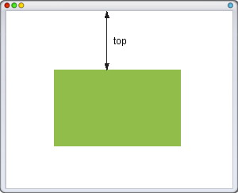
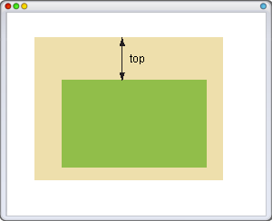

Для позиционированного элемента определяет расстояние от верхнего края родительского элемента до верхнего края дочернего элемента. Отсчет координат зависит от значения свойства position. Если оно равно absolute, в качестве родителя выступает окно браузера и положение элемента определяется от его верхнего края (рис. 1). В случае значения relative, top отсчитывается от верхнего края исходного положения элемента. Если для родительского элемента задано position: relative, то абсолютное позиционирование дочерних элементов определяет их положение от верхнего края родителя (рис. 2).

Рис. 1. Значение top относительно окна браузера

Рис. 2. Значение top относительно родителя
В качестве значений принимаются любые единицы длины, принятые в CSS — например, пикселы (px), дюймы (in), пункты (pt) и др. Значение свойства top может быть и отрицательным, в этом случае возможны наложения разных элементов друг на друга. При задании значения в процентах, положение элемента вычисляется в зависимости от высоты родительского элемента.